KIRÁLYAutószerviz · Dunaújváros
Minden logó egyedi, a betűk görbékké alakítva, így bármekkora méretben éles marad. A névjegykártyák 90 × 50 mm-esek, 3 mm kifutóval, nyomdakész PDF-ben.
01Logó
Három dugattyú hajtókarral – a középső magasabb, narancs fejjel: korona. A név és a motorjavítás egy jelben.
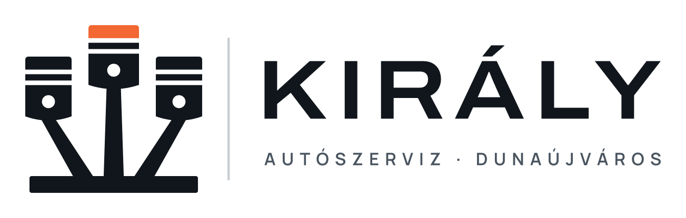
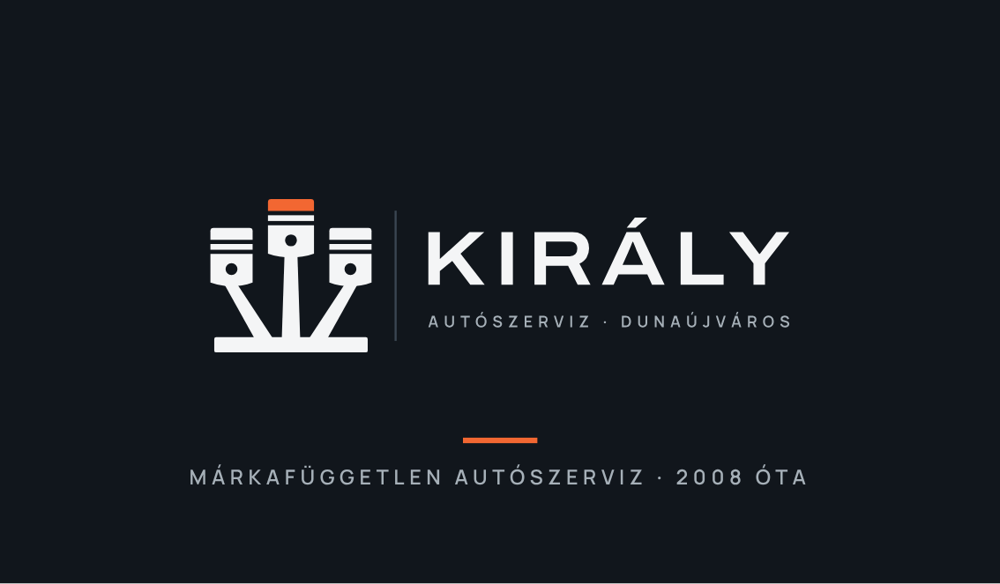
02Logó
Három villáskulcs legyezőben, a középső narancs: a legközvetlenebb autószerelő-jel, koronába rendezve.
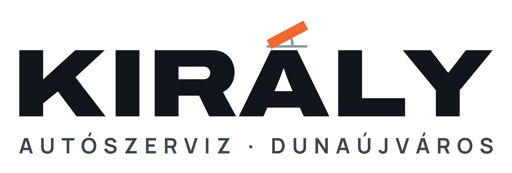
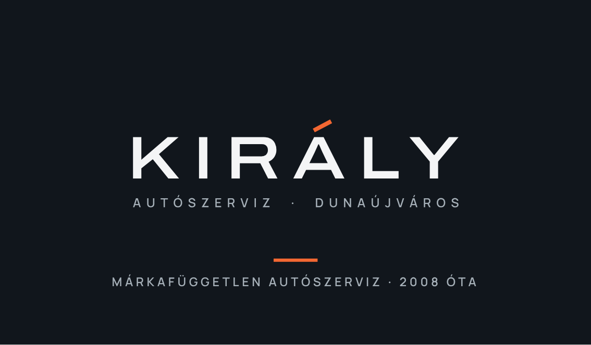
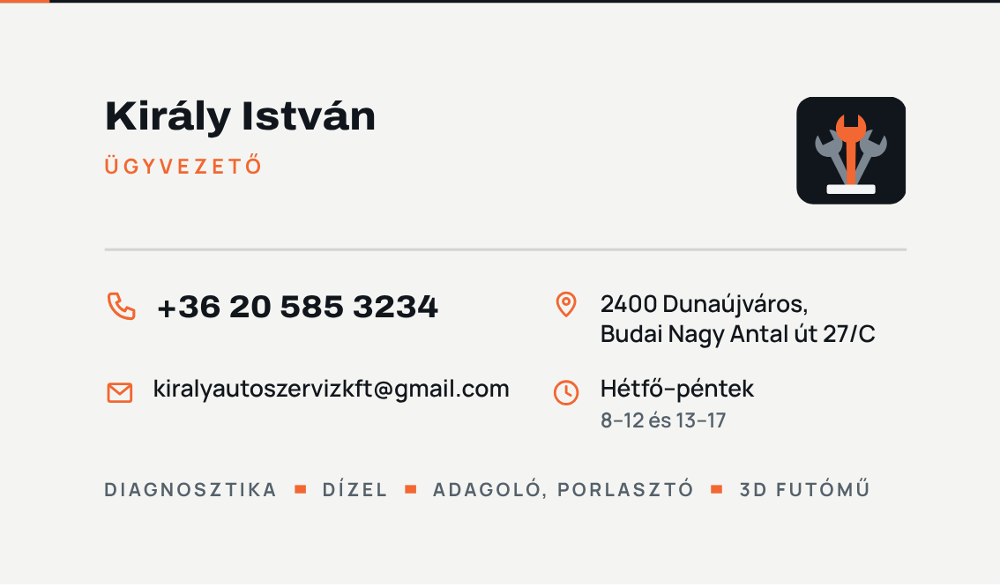
03Logó
Valós arányú gyertya acél fémrészekkel és narancs szikrával – energia, indulás, precíz szerelés.
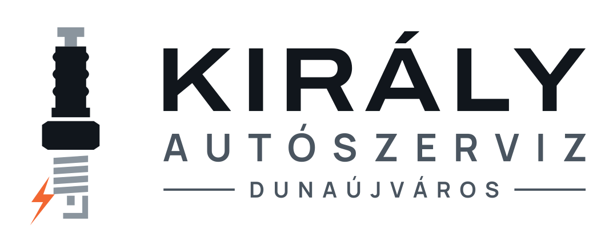
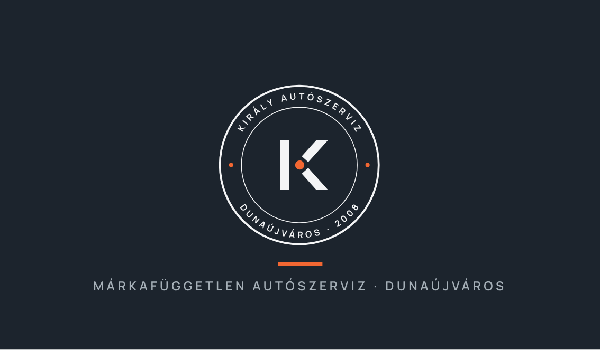
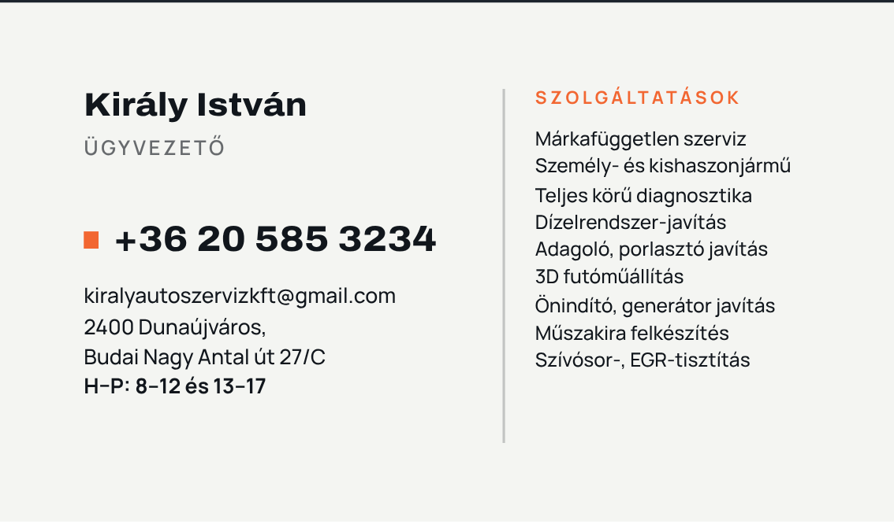
04Logó
Kétoszlopos emelőn megemelt autó, narancs emelőkarokkal – egy pillantásra autószerviz, a műhely hétköznapjainak jele.
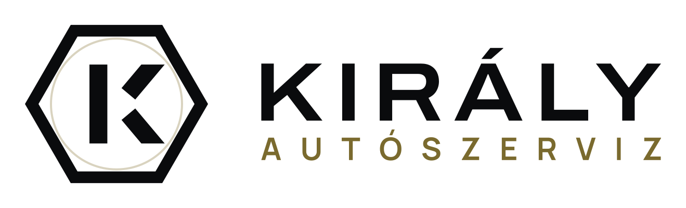
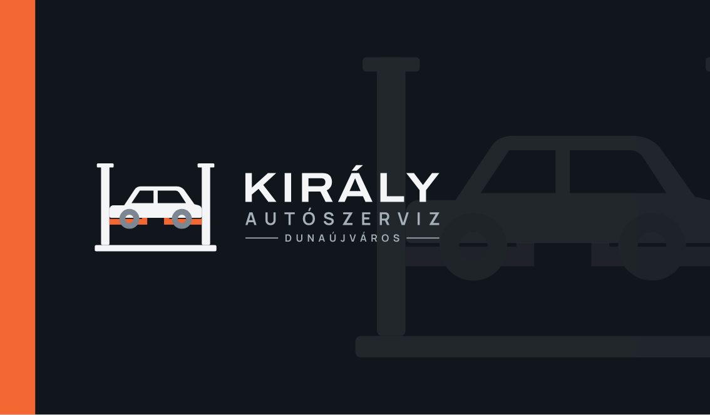
05Logó
Letisztult mérőóra rögzítőszárral és mérőcsappal, narancs mutatóval – a pontos mérés és beállítás jele.
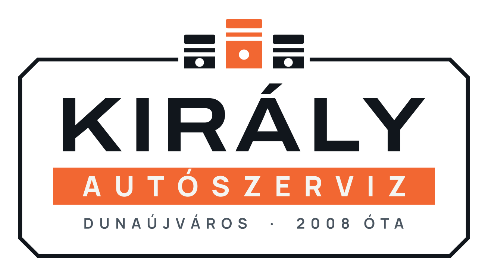
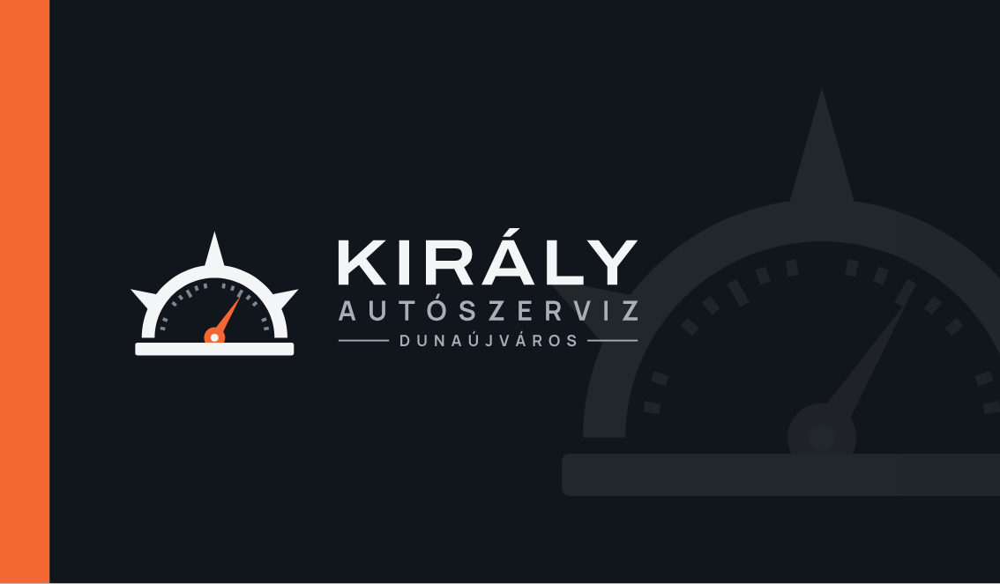
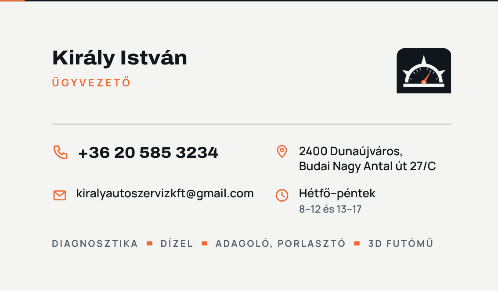